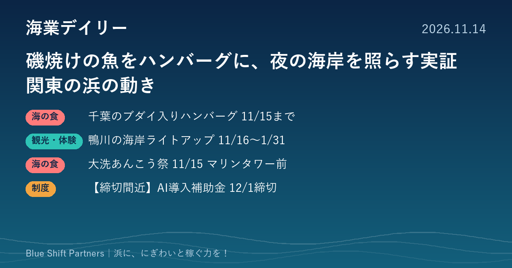

2026.11.14
磯焼けの魚をハンバーグに、夜の海岸を照らす実証 関東の浜の動き

千葉県が、磯焼けの一因とされるブダイを使った加工品の販売と、鴨川市の海岸でのライトアップ実証を相次いで発表しました。茨城県大洗町では、冬の味覚あんこうを囲む祭りが開かれます。締切が近い補助金もあわせてお伝えします。
磯焼けの一因とされるブダイをハンバーグに 千葉県産を使い11月15日まで販売
千葉県は11月12日、県産のブダイを使った「お魚ハンバーグ ブダイ入り」の販売を発表しました。原料の加工を千葉県漁業協同組合連合会、製造をカネテツデリカフーズ株式会社が担い、イオンリテールと全国漁業協同組合連合会が協働で開く「プライドフィッシュ フェア」に合わせて、11月13日〜15日に関東から中四国のイオン・イオンスタイル約390店舗（一部取り扱いのない店舗あり）で販売されます。価格は429円（税込）で、商品パッケージに「ちばブルーカーボン」のロゴマークが使われるのは今回が初めてです。
ここがポイント：ブダイなど海藻を食べる魚の食害は藻場が消える「磯焼け」の原因のひとつで、県内では特に内房で起きています。駆除しても知名度が低く値がつきにくい魚を、藻場を守る取り組みと結びつけて商品にした例として、未利用魚に悩む浜の参考になります。
出典：千葉県 農林水産部漁業資源課「海藻を食べる魚（県産ブダイ）を使用したハンバーグの販売について」（2026-11-12）
鴨川市の前原・横渚海岸で夜のライトアップ実証 11月16日から1月31日まで
千葉県は11月11日、鴨川市の前原・横渚海岸でライトアップの実証事業を行うと発表しました。旧市民会館跡地付近からKamogawa SEASIDE BASE付近までの区間で部分的に、砂浜や海岸沿いのプロムナードのヤシの木を照らし、フォトスポットとなるモニュメントも設けます。期間は11月16日から2027年1月31日までの日没から午後10時までで、天候や機材調整などにより実施しない日や時間を短くする場合があります。夜のにぎわい不足という地域の課題に対し、効果や反響を調べて今後の観光地域づくりの検討に生かすとしています。
ここがポイント：海辺の観光は日中で終わりがちで、夜の過ごし方をどうつくるかは多くの浜に共通する課題です。県がこの実証でどんな反響を確かめるのかは、夜の集客を考える浜の飲食・宿泊事業者や自治体にとって参考になります。
出典：千葉県 商工労働部観光政策課「前原・横渚海岸ライトアップ実証事業の実施について」（2026-11-11）
茨城県大洗町で「大洗あんこう祭」 11月15日、大洗マリンタワー前広場で
茨城県大洗町で、11月14日・15日に「令和8年度 大洗秋まつり 商工感謝祭＆大洗あんこう祭」が開かれます。会場は大洗マリンタワー前広場で、時間は9時30分から15時までです。15日のあんこう祭では、あんこう汁（1杯300円）を11時から1,000食提供します（整理券は10時から配布）。あんこうの吊るし切りの実演は、両日のステージイベントで行われます。町内の参加飲食店で使える「プレミアムあんこう鍋チケット」（5,000円分を4,000円、1日150枚限定）も用意されています。
ここがポイント：旬の魚を祭りの目玉にするだけでなく、チケットで町なかの飲食店の利用につなげている点が特徴です。一日のイベントを地域の店の売上に広げる工夫として、冬の集客を考える浜の参考になります。
出典：大洗観光協会「【開催告知-2026年11月】令和8年度 大洗秋まつり 商工感謝祭＆大洗あんこう祭」（2026-10-07）
【締切間近】デジタル化・AI導入補助金2026 通常枠 第7次締切は12月1日17時
「デジタル化・AI導入補助金2026」通常枠は、第7次の締切が12月1日（火）17時です（交付決定は2027年1月19日の予定）。対象は中小企業・小規模事業者等で、ソフトウェア購入費・クラウド利用料（最大2年分）を必須とし、導入・活用コンサルティング、導入設定や研修、保守サポートなども対象経費になります。補助率は1/2以内（最低賃金に関する要件を満たす場合は2/3以内）、補助額は1プロセス以上で5万円以上150万円未満、4プロセス以上で150万円以上450万円以下です。申請の手順や次回以降の締切は、公式サイトの案内でご確認ください。
ここがポイント：直売所や食堂のレジ・予約の仕組み、水産加工場の受発注や在庫の管理など、浜の事業者が業務の手間を減らすソフトの導入を考えるときの選択肢になります。締切まで残り17日なので、検討中なら早めの準備が必要です。
出典：中小企業基盤整備機構「デジタル化・AI導入補助金2026」通常枠（2026-11-14）
ブダイのハンバーグは、駆除しても値がつきにくかった魚に「藻場を守る」という物語をつけて、関東から中四国の約390店舗に並べた例です。大洗のあんこう鍋チケットも、祭りの一日を町の店の売上に広げる仕掛けです。浜の課題をそのまま商品や仕組みに変える視点は、どの地域でも応用できます。